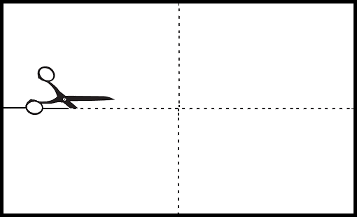
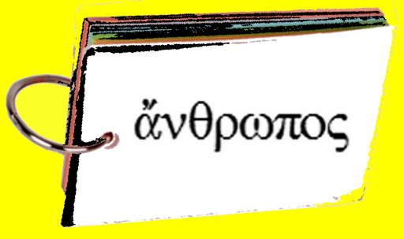
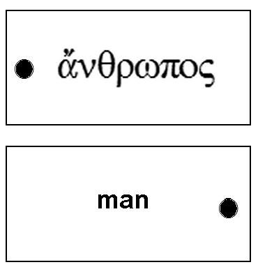

| Greek | Meaning | Notes |
|---|---|---|
| ἄγγελος, m | messenger, angel | Note: two γγ sound as 'ng' |
| ἀδελφός, m | brother | Philadelphia = city of brotherly love |
| ἄνθρωπος, m | man, mankind | anthropology |
| ἀπόστολος, m | apostle | |
| ἄρτος, m | bread, loaf | |
| γάμος, m | marriage | polygamy (person married to many spouses), bigamy (person married to two spouses), digamy (person married to second spouse after the death of the first one) |
| δοῦλος, m | slave | |
| θάνατος, m, | death | thanatophobia = fear of death/ dying |
| θρόνος, m | throne | |
| καρπός, m | fruit | in a seed plant, the pistil contains one or more carpels which become the fruit |
| κόσμος, m | world, system | cosmic |
| λίθος, m | stone | lithograph = writing on stone |
| λόγος, m | word, statement | |
| νόμος, m | law | Deuteronomy = second law |
| οἶκος, m | house | economy = law of the house; ecology = study of the house |
| οἶνος, m | wine | enology = study of wine/wine making |
| ὄχλος, m | crowd, multitude | ochlocracy = mob rule; ochlophobia = fear of crowds |
| ποταμός, m | river | hippopotamus = river horse |
| τόπος, m | place | topology |
| υἱός, m | son | |
| φίλος, m | friend | Philadelphia |
| χρόνος, m | time | chronology |
| καί, conj. | and, also, even | |
| ἐστί or ἐστίν, verb | is | |
| εἰσί or εἰσίν, verb | are |
Learning the vocabulary
- καί is a conjunction, i.e., a word that links two things
- ἐστί, ἐστίν, εἰσί, εἰσίν are copula verbs indicating equality between two things, like "is, am, are"
- All the other words in this list are masculine nouns
- These words must be memorized.
- You should be able to give the English meaning to each Greek word.
- Also you should be able to say or write the Greek word when given the English word.
- You should also be able to decline each word.
- Do not worry about learning rules for the accent.
- When you pronounce the Greek word, emphasize the syllable containing the accent (whether the accent is acute, grave, or circumflex), e.g.,
- ἄνθρωπος [AN-throw-pos]
- ἀνθρώπου [an-THROW-poo]
- Students have found a variety of ways to learn the vocabulary.
- Some put them on a master sheet, cover over one side, and attempt to supply the required meaning.
- The problem here is that you tend to memorize the order in which they appear more than the words themselves.
- In order to create a measure of randomness, others have put the words on a computer.
- The problem with this approach is that most computers are not portable. You have to study your vocabulary where your computer is.
- The easiest way is to put the words on cards which are joined by a metal ring.
- In this way, you can flip through the cards (testing yourself) during any spare moment (waiting in the dinner line, waiting for your date, listening to a boring lecture, watching the hockey game, etc.).
- You can also create variety by shuffling the cards.
- Cards can be easily created by cutting an ordinary 3" x 5" index card (75mm x 125mm) into four sections—each 1 ½" x 2 ½" (37mm x 62mm).

- Then punch a single hole at one end of each small card.
- Write the Greek word on one side and the English on the other.
- Do not add pronunciation guides on the Greek side. If you do, they will be a lingering crutch.

 - Notice that singular nouns are translated into English by joining the meaning with the indefinite article "a" or "an."
- Plural nouns are translated normally.
- Do not add "the" to these words.
- At this point you have not learned the word for "the" (definite article).
Declensions in English
- When we talk about declension, we mean the changes that we give to nouns, adjectives, and pronouns to distinguish the gender, case, and number.
- In English, there is very little evidence of declension.
- Because English is the result of several languages, we have a variety of ways to change from singular to plural (e.g., ship ships, church churches, calf calves, baby babies, man men, foot feet, child children, mouse mice, ox oxen, cherub cherubim, datum data, analysis analyses, beau beaux, cactus cacti, sheep sheep).
- I'm glad I don't have to learn English with all those different ways of making plural.
- Why isn't "pen" the plural of "pan" like "man/men"? Or "house/hice"? Or "boot/beet"? Or "fox/foxen"? Greek is much easier.
- In English, case declension is seen primarily in pronouns:
| SINGULAR | PLURAL | |
|---|---|---|
| Subject case | I | we |
| Possessive case | my | our |
| Indirect object case | me | us |
| Direct object case | me | us |
* As each pronoun is put in a different case, it takes a different form.
* Also in pronouns we make a distinction between the genders:
| Masculine | Feminine | Neuter | |
|---|---|---|---|
| Subject case | he | she | it |
| Possessive case | his | her | its |
| Indirect object case | him | her | it |
| Direct object case | him | her | it |
Declensions in Greek
- In Greek, there are five noun case forms.
- The cases in Greek are
- Nominative
- Genitive and Ablative
- Dative, Locative, Instrumental
- Accusative
- Vocative
- Because the Genitive and Ablative are identical in form, we will group them together and call them the GEN case.
- Also, because the three cases (Locative, Instrumental, and Dative) have identical forms, we will group them together and call them the DAT case.
- The Nominative case is abbreviated NOM.
- The Accusative case is abbreviated ACC.
- The Vocative case is abbreviated VOC.
- The cases in Greek are
- A noun is a word which designates or names something (e.g., house, bird, tree, man, desks, cars, grace, love).
- Some nouns in English (like love) have the same form as verbs; but in Greek, they may have the same stem, but the suffixes (endings) attached to these words will generally be different.
- Greek nouns have been classified into three major categories or declensions
- The first declension nouns generally use -α or -η in the endings.
- The second declension nouns generally use -ο in the endings.
- The third declension nouns are somewhat irregular in their endings.
- In this lesson, we will examine the second declension nouns.
- Nouns in the NOM case which end in -ος are usually masculine.
- There are only a few exceptions.
- Nouns in the NOM case which end in -ον are neuter (there are no exceptions).
- Note the declension of the following words:
| ποταμός = river | ||
| Case | Singular | Plural |
|---|---|---|
| NOM | ποταμός | ποταμοί |
| GEN | ποταμοῦ | ποταμῶν |
| DAT | ποταμῷ | ποταμοῖς |
| ACC | ποταμόν | ποταμούς |
| VOC | ποταμέ | ποταμοί |
| νόμος = law | ||
| Case | Singular | Plural |
|---|---|---|
| NOM | νόμος | νόμοι |
| GEN | νόμου | νόμων |
| DAT | νόμῳ | νόμοις |
| ACC | νόμον | νόμους |
| VOC | νόμε | νόμοι |
Uses of the cases
NOM case (Nominative)
- The Nominative is the case of the subject in a sentence or clause
- It is also the case of the completion of a copula verb (like is or are)
- e.g.,
ποταμὸς ἐστὶ καλός
a river is beautiful.
ποταμοὶ εἰσὶ καλοί
rivers are beautiful.
GEN case (Genitive and Ablative)
- The Genitive case is used to express a relationship between one noun and another.
- In English, we use the words of or from to express this relationship.
- Examples:
- This hammer is made of steel.
- She is from New York.
- We entered the house of the Lord.
- This is a house of righteousness.
- They went away from the house.
- Examples:
- In some instances this case shows ownership (house of the Lord) or description (house of righteousness). That is the basic idea of the Genitive case.
- In other instances, this case shows separation or origin (Ablative sense) and can be translated into English by using the prepositional ideas in the following words: off, out, out of, from, away, away from.
- Thus the GEN case is sometimes referred to as the of or from case.
- In other words, this is an indirect object form of the prepositions of or from.
- These preposition ideas are contained within the ending of the Greek word. There is no separate Greek word as English does.
- Examples:
- ὁ ἄνθρωπος βαίνει ποταμοῦ
the man comes from a river. - ὁ ἄνθρωπος βαίνει ποταμῶν
the man comes from rivers.
- ὁ ἄνθρωπος βαίνει ποταμοῦ
DAT case (Locative, Instrumental, and Dative)
- The Dative is also used to express a relationship between one noun and another.
- The locative sense indicates the place of the relationship
- I sang in the church.
- The book fell by the fountain.
- The boy ran among the crowd.
- The elephant sat on my hat.
- It is the indirect object case of the following understood prepositions: in, on, by, among, at.
- The instrumental sense shows the means or indirect agency used to do something. (I swatted the fly with a newspaper. You are saved by faith.)
- It is the indirect object case of the following understood prepositions: with, by.
- The dative sense expresses some personal interest (This book is for Bill. Give this ruler to Tom.)
- It is the indirect object case of the following understood prepositions: to, for.
- The locative sense indicates the place of the relationship
- While the GEN case is the of/from case, the DAT case is all the rest of the prepositions.
- ποταμῷ may mean:
in a river,
by a river,
on a river,
with a river,
for a river,
to a river. - Likewise, ποταμοῖς may mean
in rivers,
by rivers,
on rivers,
among rivers,
with rivers,
for rivers,
to rivers. - The context of the sentence will determine which meaning fits best.
- ποταμῷ may mean:
ACC case (Accusative)
- The Accusative is the direct object case.
- The subject is doing action to the direct object.
- In the sentence, I hit Bill, I is the subject and Bill is the direct object. Then Bill hit me. Now I am being hit by Bill, so we change the pronoun to me to indicate that I am now the object of the hitting.
- In Greek, we do the same thing to nouns and pronouns.
- ὁ ἄνθρωπος βλέπει τὸν ἀδελφόν
the man sees the brother.
ὁ ἄγγελος βλέπει τὸν ἄνθρωπον.
the angel sees the man. - Notice that the Greek word for man in the first sentence changes its form from the NOM case to the ACC case in the second sentence.
VOC case (Vocative)
- The Vocative is the case of address which is an expression of asking for help.
- O Lord, help us.
- John, have you seen my books?
- Look, Barbara, a train is coming.
The declension of ποταμός river has the following meanings:
| CASE | Singular | Plural | ||
|---|---|---|---|---|
| NOM | ποταμός | a river | ποταμοί | rivers |
| GEN | ποταμοῦ | of/from a river | ποταμῶν | of/from rivers |
| DAT | ποταμῷ | in/to/by a river | ποταμοῖς | in/to/by rivers |
| ACC | ποταμόν | a river | ποταμούς | rivers |
| VOC | ποταμέ | O river | ποταμοί | O rivers |
The stem of the noun is found by removing the -ος ending of the vocabulary word (the NOM singular case).
In order to decline a noun, add the following endings to the stem:
| CASE | Singular | Plural |
|---|---|---|
| NOM | -ος | -οι |
| GEN | -ου | -ων |
| DAT | -ῳ | -οις |
| ACC | -ον | -ους |
| VOC | -ε | -οι |
Translation
- In order to translate effectively, you must do the following:
- Learn all the words given in the vocabulary.
- Learn all the forms as they are presented in each lesson.
- Note the significance of the various forms—is it singular or plural? What case is it?
- Read the Greek words aloud, noting word groups.
- Now begin translating.
Translate the following:
- καρπὸς καὶ ἄρτος
- λόγοι νόμου
- ὄχλος ἀγγέλων
- ἀπόστολος ἐστὶν ἄνθρωπος
- ἀπόστολοι εἰσὶν ἄνθρωποι
- Μωϋσῆς ἐστὶν ἄνθρωπος.
- Μάρκον ἐστὶν ἀπόστολος;